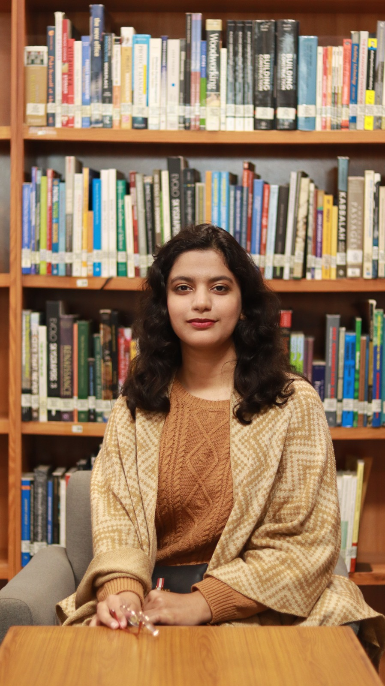
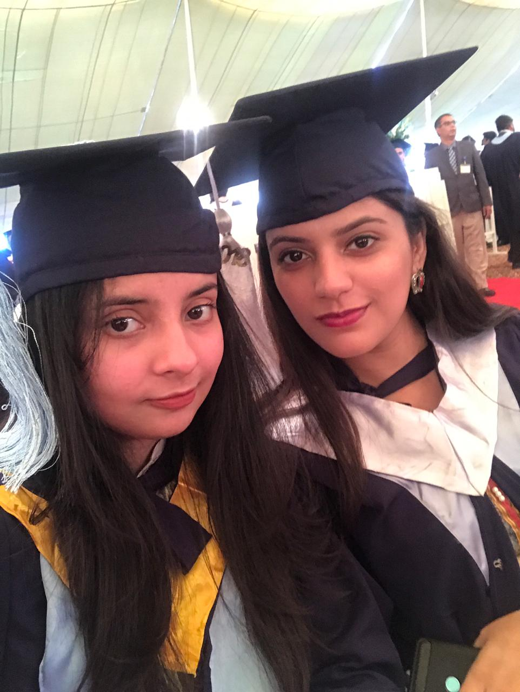
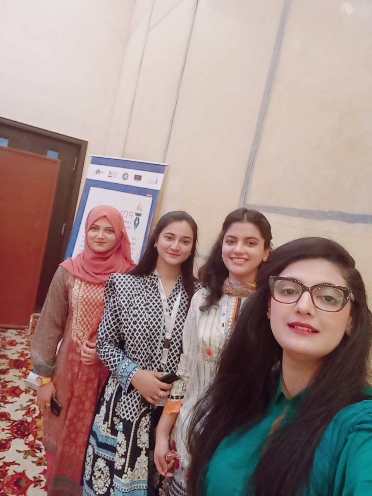
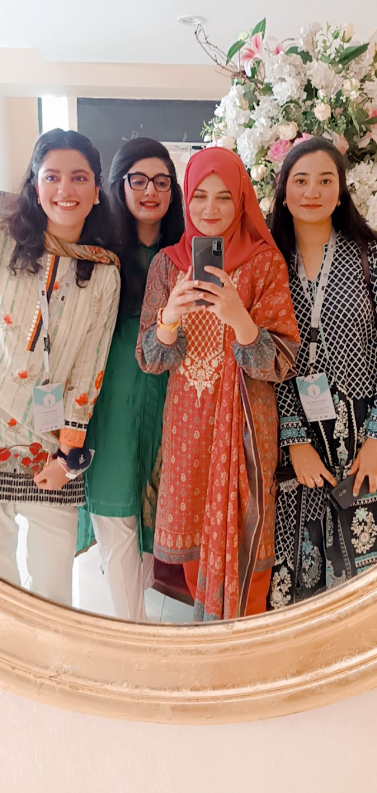
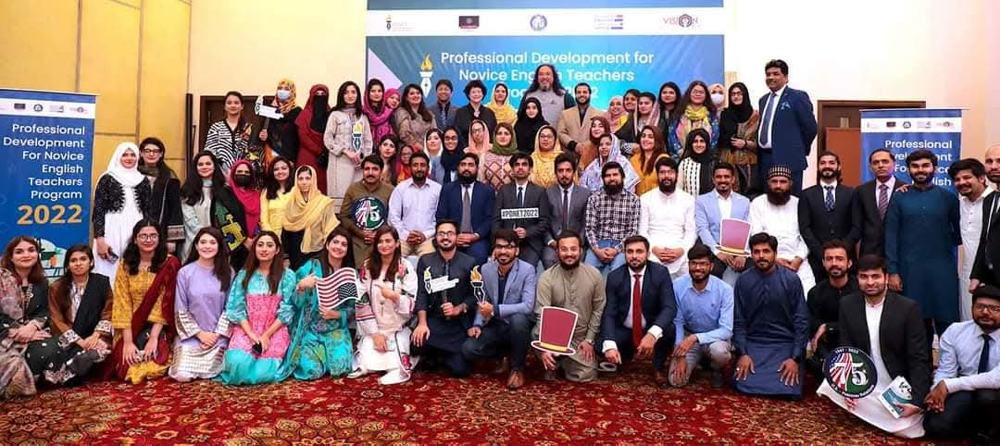

Projects
Project 1: Review of Muslim Volunteering in the West
Between Islamic Ethos and Citizenship
At Indiana University's Journal of Muslim Philanthropy & Civil Society, I authored a critical book review of Peucker and Kayikci's text on Muslim volunteering and civic identity. My role involved deep comparative analysis across case studies from Germany, the UK, and Australia, emphasizing how Islamic principles like Khidma intersect with notions of citizenship and civic belonging.
Through close reading and thematic synthesis, I highlighted the dual motivational framework—religious duty and civic engagement—while offering constructive critique on analytical gaps related to theoretical depth and structural marginalization. The resulting review enhanced scholarly understanding of Muslim philanthropic practice and contributed to broader discourse on integration within Western civic spaces.
View Publication


Project 2: Gender and Educational Leadership Analysis
A Comparative Analysis of Gender and Educational Leadership in Pakistan and the United Kingdom
As a co-author and lead researcher, I conducted a comparative study examining gender dynamics in educational leadership across Pakistan and the UK. My responsibilities included developing the research framework, collecting and analyzing mixed-method data, and interpreting cross-national differences in leadership approaches and barriers.
The study revealed striking disparities: female leaders in Pakistan face systemic patriarchal impediments that limit their access and advancement, whereas in the UK, developed systemic structures still unevenly favor male leadership. The analysis offered nuanced policy recommendations tailored to each context, ultimately aiming to inform more equitable practices in educational systems.
View Publication


